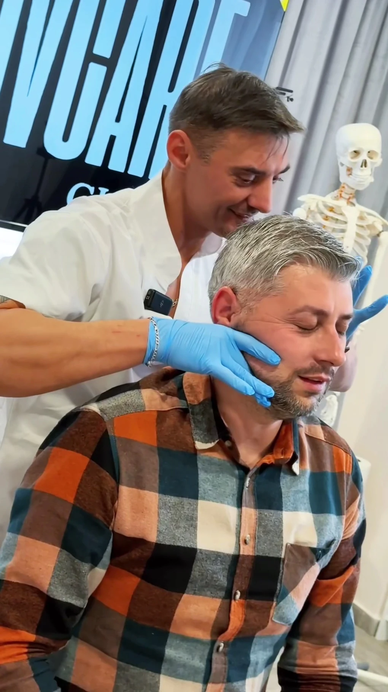

{{Terapie manuală|Manual therapy|Terapia manual}}
{{Ședință la cabinet, cu mâinile terapeutului, pe masa de consultație.|A session at the practice, hands-on, on the treatment table.|Sessão no consultório, com as mãos do terapeuta, na marquesa.}}
{{durată: de confirmat|duration: to be confirmed|duração: a confirmar}}